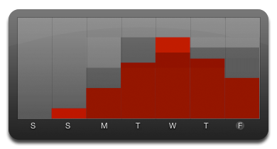
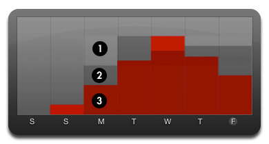
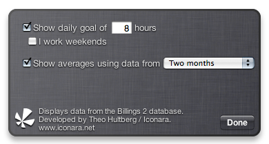

Workload
Workload is a Dashboard widget for people who use Marketcircle's excellent time reporting and invoicing application Billings.
It queries Billings' database to show you how much you have worked the last week, how much you work on average and optionally how that compares to your goal.
The widget requires Billings 2.5.
Explanation
Each column represents a day, where the rightmost column is today. If you haven't guessed at this point, the letters below the columns means "Saturday", "Sunday", "Monday", etc.
Why the odd order of the days? Well, since the rightmost column is today, the next rightmost is yesterday and so on. If today was a Wednesday, the leftmost column would represent last Thursday, got it?
The red bars show how much you worked that day. How much you worked is determined by suming up all time entries for that day (a time entry is all the entries of a slip in Billings, you find them if you click on "Log..." in the slip inspector window).
The light gray bars shows your goal. In the screenshot below I have set a goal of eight hours per day, except for weekends.
The dark grey bars are how much you work on average, so in the screenshot below you can see that on Wednesday I worked more than I work on average on Wednesdays, and the same for Saturday, but for the rest of the days I worked less than average.
- The goal for monday
- How much on average I work on mondays
- How much I actually worked last monday
Most of the things above can be changes. This is a screenshot of the back with the preferences.
You can change the goal (the light gray bars) by entering another number in the box where it currently says "8" (I thought it an appropriate default). You can also check the "I work weekeds" checkbox if you want the goal bars to be visible for Saturday and Sunday too. Currently you can't set different goals for different days, I haven't decided if this just adds uneeded complexity, or if it would be useful.
If you think goals are silly, you can uncheck the checkbox and the goal bars will not be displayed at all.
You can also choose to not include the average hours, or change which period the average should be based on. "Forever" means that the widget will use the earliest date for which there exists a time entry as start date. If you choose a period which is longer than you have used Billings, the average will be based on the longest possible period (so if you have used Billings for three months, choosing anything above two months would be the same as choosing "Forever").
Known bugs and limitations
-
When Billings' timer is on, the the hours for the current day won't be right. The reason is that when a slip's timer is active, the last time entry's recorded duration is not the duration of the current session, but the sum of all the time entries of the slip, plus the duration of the current session. Why this is so I have no idea, but I'm working on a workaround.This has been fixed. -
If you import slips from other people into your database Workload will display that data as though it was you who had worked those hours. In Billings 2.5 it is possible to see that data came from another user, and I will add a check for that as soon as possible. (Thanks to Marketcircle for mentioning this.). This has been fixed. -
You can only see approximately how much you've worked each day since there is no scale on the chart, however that is partly intentional. Workload is only meant to provide a quick overview, so exactness hasn't been a goal. You can compare the height of the bars with the height of the goal for comparison. In a future version I will probably include some kind of scale on the chart.There is now a proper grid. -
The widget requires an Intel Mac. This is really silly and shouldn't be so. The reason is that it uses a newer version ofThis has been fixed.sqlite, which I have compiled myself. I'm not sure how to compile it for both PPC and Intel right now, but I'll try my best.
Further development
Workload is still at it's first release and there is going to be some more development, but I haven't decided on exactly what yet. As it is it fulfills the need I had when I started it, so I might need a few suggestions as to which way to move forwards.
It was brought to my attention that you can script Billings with F-Script, and I'm looking into that at the moment. Perhaps I will create something similar to Workload but as a Billings plug-in.
Changelog
- 1.0b6 (2007-05-02)
-
- The chart has now a proper grid
- The widget now notifies you when a new version is available
- Cosmetic updates (e.g. sheet panel for messages)
- 1.0b5 (2007-05-02)
-
- PPC compatibility, finally
- 1.0b4 (2007-04-28)
-
- Built-in bug reporting
- Fixed average calculation (broken by b3)
- 1.0b3 (2007-04-27)
-
- Universal SQLite binary
- 1.0b2 (2007-04-26)
-
- Public beta test
- 1.0b1 (2007-04-20)
-
- Initial version
Details for geeks
The widget was built using Dashcode (excellent debugger, buggy and crappy in most other respects, violently Subversion unfriendly) and TextMate (excellent in all ways possible, unfortunately it can't play with Dashcode, because Dashcode is the mean kid on the street and hates everybody else). MochiKit (excellent to the same degree as TextMate) provides insulation from the boring bits. The widget also contains a univeral binary of SQLite 3.3.15, which is used to retrieve the data from Billings.